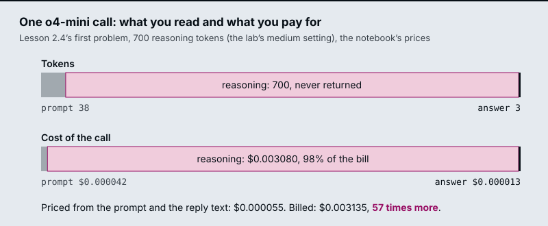

The running example is the generator of the Larkspur Cloud support assistant from M11 to M13: the call that turns retrieved handbook chunks into an answer. How long does a refund take? has its answer in one chunk. Can I get a refund after 45 days? needs proration arithmetic. Those two questions decide which model and how much thinking the assistant pays for. The notebooks run their own tasks (a deployment-order puzzle, an order-line extraction, a six-problem sweep) and save no outputs, so every figure on these pages is one the notebooks state, one counted from their code, or one the lab computes.
TL;DR
- A chat completion is one stateless call: role-tagged messages and parameters in,
choices[0].message.contentand ausageobject out. OpenAI and the Hugging FaceInferenceClientshare that shape; the Gemini SDK in lesson 2.1 takes a prompt string and returnsresponse.text. - An open model is reached through a hosted endpoint or run on your own GPU. With no
providerset, the installedhuggingface_hub1.16.1 sends chat calls to server-side auto routing; locally you apply the chat template yourself and need the memory (at least 5 GB of GPU memory forrecurrentgemma-2b-it, per the notebook). - A reasoning model spends hidden reasoning tokens before it answers. They are counted inside
completion_tokensand billed at the output rate. At the notebooks’ priceso4-minicosts 7.3 timesgpt-4o-miniper token, before it thinks at all. reasoning_effortbuys deliberation, which helps only when the failure was too little thinking. In the lab’s step-then-plateau sweep, medium answers 5 of 6 for $31.24 per 10,000 answers and high answers the same 5 for $79.64.- Pick a setting with the marginal number, dollars per extra accuracy point, measured on a mixed task set that contains your easy traffic as well as your hard cases.
Mental model
- The app builds the messages: a system instruction, the retrieved handbook chunk and the customer’s question.
- One client call sends them to an endpoint: a vendor API, a Hugging Face provider or a model on your own GPU.
- A reasoning model spends reasoning tokens first. You never receive them. A fast model skips this step.
- The model returns the visible answer, here a few tokens from the refund-timing chunk.
- The response’s usage object counts prompt and completion tokens. Completion includes the hidden reasoning.
- Cost is prompt tokens at the input price plus completion tokens at the output price.
The answer is the only part you read, and it is the smallest part you pay for. A fast model goes straight from messages to answer; a reasoning model spends tokens in the middle box first, and usage is the only place they show up. Lessons 2.3 and 2.4 are about deciding when that middle box is worth paying for.
Chat completions
Lesson 2.1: Calling commercial LLM APIs: OpenAI and Gemini. Notebooks: 01a_using_chatgpt_or_google_gemini.ipynb
A chat completion is one HTTP call. The request names a model and carries the conversation as a list of messages, each a role and a content; the response carries the model’s reply and a count of the tokens it used. The notebook’s OpenAI call is the whole pattern:
response = openai.chat.completions.create(
model="gpt-4o",
messages=[{"role": "user", "content": prompt}],
temperature=0.1, # degree of randomness of the model's output
)
response.choices[0].message.content
flowchart LR
R["Request<br/>model<br/>messages: role + content<br/>temperature, max_tokens"] --> M[Model]
M --> S["Response<br/>choices[0].message.content<br/>usage: prompt and<br/>completion tokens"]
Four parts of the request and response matter on every call:
- Roles.
systemsets standing instructions,useris the question,assistantis an earlier reply. For the Larkspur generator the system message says to answer only from the handbook excerpts, and the user message holds the excerpts and the customer’s question. - The call is stateless. The API remembers nothing between calls. A follow-up question works only if you send the earlier turns again, so every turn of a long conversation pays for all the turns before it.
- Sampling parameters.
temperaturecontrols randomness; the notebook uses 0.1 for repeatable answers.max_tokenscaps the reply; lesson 2.2’s notebook sets 1,000. Reasoning models are stricter: M25’s routing page records that o-series models reject a custom temperature. usage.prompt_tokensandcompletion_tokensare what the provider bills. In the installedopenai2.54.0,usage.completion_tokens_details.reasoning_tokensreports how many of the completion tokens were hidden reasoning. Lesson 2.3 is about that field.
The notebook reads the key with getpass and sets openai.api_key, the SDK’s module-level client. Lessons 2.3 and 2.4 create OpenAI() instead, which reads OPENAI_API_KEY from the environment loaded from .env. Either way the key stays out of the code and out of the notebook’s saved state.
Two SDKs, two shapes
The notebook calls Gemini through Google’s google-generativeai package, and the two SDKs disagree on almost every part of the call:
| OpenAI | Gemini (google-generativeai) |
|
|---|---|---|
| Set the key | openai.api_key = key |
genai.configure(api_key=key) |
| Pick the model | model="gpt-4o" on each call |
genai.GenerativeModel("gemini-2.5-pro") |
| Send | messages, a list of role and content |
generate_content(prompt), a string |
| Read the reply | response.choices[0].message.content |
response.text |
The notebook hides the difference behind one function, get_completion(prompt, model), which branches on the model name. The rest of the code calls one function, so switching provider is a one-argument change. Two details of the notebook’s version are worth fixing before you copy it:
- It fails quietly. Any model name other than exactly
"gpt-4o"or"gemini-2.5-pro"returns the string"LLM not configured! ..."as if it were an answer. A typo such as"gpt-4o-mini"prints that sentence where the model’s reply should be. A wrapper you own should raise on a model it does not know. - The Gemini package is retired. The installed
google-generativeai0.8.6 describes itself as deprecated and legacy, with all support ended on November 30, 2025; its successor isgoogle-genai, which this repository also installs. The notebook’s Gemini cells still show the shape of a second SDK, which is their point here.
LangChain (M07) is the general version of get_completion: one chat-model interface over many providers, so a RAG chain does not change when the generator does.
Inference endpoints
Lesson 2.2: Open-source LLMs via Hugging Face Inference and locally. Notebooks: 02a_open_source_llms_via_hugging_face_inference_api.ipynb, 02b_open_source_llms_locally.ipynb (optional)
An inference endpoint is a server that holds a model’s weights and answers calls to it. For an open model you choose who runs that server. The notebooks show two of the three options:
| Where the weights run | The call | What you manage | |
|---|---|---|---|
| Vendor API (lesson 2.1) | The vendor’s servers | openai.chat.completions.create(...) |
A key and a budget |
| Hugging Face Inference (02a) | A provider Hugging Face routes to | InferenceClient(...).chat.completions.create(...) |
A token, and which provider serves the model |
| Local (02b) | Your GPU | model.generate(...) or a pipeline |
Memory, the chat template, generation settings |
The 02a notebook calls meta-llama/Llama-3.1-8B-Instruct, an 8B-parameter instruction-tuned model, and deepseek-ai/DeepSeek-V3-0324 with the same messages and max_tokens=1000. The client mirrors the OpenAI call on purpose: client.chat.completions.create(model=..., messages=...) and completion.choices[0].message.content. Code written against the OpenAI shape moves to an open model by changing the client and the model id.
Two details of the hosted path decide what you are actually calling:
- The model id names the weights, not the server. In the installed
huggingface_hub1.16.1, a chat call with noproviderargument defaults to server-side auto routing: Hugging Face picks a provider that hosts the model. Latency and price can differ by provider, so a production client passesprovider=explicitly and records it with each answer. - The notebook’s “client without API key” still sends one. It creates
InferenceClient()with no token, after settingHF_TOKENin the environment. Withtoken=Nonethe library falls back toHF_TOKEN, so both of the notebook’s clients are authenticated;build_hf_headers(token=None)returns the bearer token from the environment. To send no token at all, passtoken=False.
The notebooks price only the OpenAI models, so this module has no per-answer figure for the open ones. Measure them the same way lesson 2.4 measures o4-mini: from usage where the provider returns it, or from GPU hours when you host the model.
Running a model locally
The optional 02b notebook loads google/recurrentgemma-2b-it with transformers in bfloat16 on a CUDA device, and states that it needs at least 5 GB of GPU memory. Running locally exposes the steps a hosted endpoint does for you:
flowchart LR
C[/"chat<br/>role + content"/] --> T["apply_chat_template<br/>add_generation_prompt"]
T --> E[encode to ids]
E --> G["generate<br/>max_new_tokens"]
G --> D[/decode/]
- The chat template. Each chat model was trained on its own markup around roles.
tokenizer.apply_chat_template(chat, tokenize=False, add_generation_prompt=True)writes that markup, and the notebook encodes the result withadd_special_tokens=Falsebecause the template already added them. A hosted endpoint applies the template on the server; locally a wrong template gives fluent but off-format replies. - Generation settings.
max_new_tokenscaps the reply (150 in the first call);max_lengthcaps prompt plus reply, so the notebook uses one or the other.do_sample=Falseis greedy decoding, the same answer every run;do_sample=True, temperature=0.5samples. - What comes back.
model.generatereturns the prompt’s token ids followed by the new ones, sotokenizer.decode(outputs[0])prints the template and the question before the answer. Thepipeline("text-generation", ...)call withreturn_full_text=Falsereturns only the new text.
The notebook’s markdown calls the model “Google Gemma 2B IT” while the code loads RecurrentGemma, a recurrent variant that the notebook says needs less memory than Gemma on long sequences. The model id in the code is the one that runs.
Reasoning models
Lesson 2.3: Reasoning vs non-reasoning models. Notebooks: 03a_Reasoning_vs_NonReasoning.ipynb
“Think step by step” is a prompt: you ask an ordinary model to write its working into the answer, and you can read every word. A reasoning model is trained to work before it answers. It produces reasoning tokens internally, decides how many to spend, and returns only the conclusion. The notebook sums up the difference in three rows:
| Non-reasoning | Reasoning | |
|---|---|---|
| Who decides how much thinking happens | You, through the prompt | The model |
| Can you read the reasoning | Yes, it is in the response | Usually no |
| What you are billed for | What you can see | What you can see, plus what you cannot |
The notebook runs the same prompt through gpt-4o-mini (fast) and o4-mini (reasoning) and records four numbers per call: seconds, output tokens, reasoning tokens and whether the answer was right. Its PRICING constants, which it tells you to replace with today’s prices, are USD per million tokens:
| Model | Input | Output |
|---|---|---|
gpt-4o-mini |
0.15 | 0.60 |
o4-mini |
1.10 | 4.40 |
At those prices o4-mini costs 7.3 times as much per token, in and out, before it spends a single reasoning token. The two tasks are chosen to land on opposite sides of the decision:
- Task A, a constraint puzzle. Five services deploy Monday to Friday;
authbeforebilling,searchthe day afterbilling,notifyon Monday,reportingnot on Friday. Which deploys on Friday? Onlysearchfits, but getting there means holding four constraints at once, and a wrong early step gives a confident wrong answer. The notebook warns that the fast model is often right only some of the time, so a single happy-path test can pass it. - Task B, an extraction. Pull
order_idandtotalout of “Order #A-4417 shipped 2026-03-02, 3 items, total $148.20, customer 88213” as JSON. The answer is in the input and both models should get it. The reasoning model is slower and dearer, and still spends reasoning tokens deciding there was nothing to decide.
The invisible bill
completion_tokens is what you are charged for at the output rate. reasoning_tokens, under usage.completion_tokens_details, is the part of it you never receive. The notebook’s cost function makes that explicit:
# reasoning tokens are already inside completion_tokens; they bill at the output rate
cost = (prompt_tokens / 1e6) * input_price + (completion_tokens / 1e6) * output_price
visible = completion_tokens - reasoning_tokens
On a short answer the hidden part is almost all of the bill. The figure prices one o4-mini call on the first problem of lesson 2.4: 38 prompt tokens counted with o200k_base, a three-token answer (12:25), and 700 reasoning tokens, the lab’s representative medium setting.

Two habits follow:
- Never estimate spend from the reply text. Priced from its prompt and reply, that call costs $0.000055; the bill says $0.003135. Log
usageper request and sum it. - Check that reasoning tokens move. The fast model reports 0. If a reasoning model also reports 0, or the count stays flat while you raise the effort in lesson 2.4, the parameter never reached the model, and any conclusion about effort is drawn from a test that never ran.
When reasoning pays
The notebook reduces the choice to one question: does the task have a step where being wrong is expensive and pattern-matching is not enough? As a chain:
flowchart TD
Q1{"Is the answer in<br/>the input or one chunk?"}
Q1 -- yes --> F1["Fast model"]
Q1 -- no --> Q2{"One mechanical<br/>step?"}
Q2 -- yes --> F2["Fast model<br/>or plain code"]
Q2 -- no --> Q3{"Is a wrong answer<br/>cheap to absorb?"}
Q3 -- yes --> F3["Fast model,<br/>sample and check"]
Q3 -- no --> RM["Reasoning model<br/>set effort, lesson 2.4"]
For the Larkspur generator:
- How long does a refund take? The answer is one sentence of the
refund-timingchunk. This is Task B’s shape, and a reasoning model only adds latency and cost. - Can I get a refund after 45 days? The model has to combine the 30-day window, the plan type and the proration rule. A wrong amount turns into a support ticket, so this is Task A’s shape.
- Benchmark both kinds. Run your own hard case and your own easy case through both models. A benchmark of hard cases alone recommends the reasoning model for everything, including the lookups that make up most of the traffic.
Sending each question to the right model at run time is routing by model tier, built in M25 lesson 25.2.
Cost vs accuracy
Lesson 2.4: Reasoning-effort levers and cost. Notebooks: 04a_Reasoning_Effort_Levers.ipynb
reasoning_effort changes one thing: how many reasoning tokens the model is willing to spend before it commits to an answer. The model, the prompt and the output format stay the same. More reasoning tokens mean more latency and more cost at the output rate, and a better answer only when the task had something to deliberate about. The notebook sweeps o4-mini at low, medium and high; the installed openai 2.54.0 also types none, minimal, xhigh and max, and the notebook says to trim the list to what your model accepts.
The sweep is six problems at three levels with TRIALS = 1: 18 calls, a few cents. The problems mix easy and hard on purpose (a train arrival time, retry backoff, the deployment puzzle from lesson 2.3, LRU eviction, a syllogism, a coin-weighing puzzle), because one question gives a coin flip, not a measurement.
- Six problems, some a competent model solves without thinking and some that need the working.
- Pick the first effort level, low.
- Send every problem to o4-mini with that reasoning_effort. Three levels make 18 calls.
- A reply is correct when it contains the expected text.
- The level becomes one row: accuracy, seconds, mean reasoning tokens and cost. In the lab, low gets 4 of 6.
- Repeat at medium and high. The bill keeps climbing; accuracy stops at 5 of 6.
- Price each step up in dollars per accuracy point. Medium to high buys nothing.
- The knee is the last step you would pay for: medium, at a $2 threshold.
Each step up the dial gets one line in the notebook’s marginal table:
$ per +1pp = (cost of this level - cost of the level below) / (accuracy gain * 100)
A step with no accuracy gain reads no gain, and the notebook’s rule is that every step after one is pure cost. The knee is the last step whose price per point you would pay. The usual shape, in the notebook’s words, is “a step then a plateau”: a real gain from low to medium, much less from medium to high, while cost and latency keep climbing.
The interactive lab prices that sweep with the notebook’s own cost and marginal code, adds gpt-4o-mini from lesson 2.3 as the first rung, and scales each figure to 10,000 answers. The notebooks save no outputs, so the accuracy and reasoning-token inputs are representative: 3, 4, 5 and 5 problems right, and 250, 700 and 1,800 reasoning tokens per call. The prompt and answer tokens are counted from the notebook’s six problems. With those inputs:
| Setting | Correct of 6 | Hidden share of output | Per 10,000 answers | Step up from the row above |
|---|---|---|---|---|
gpt-4o-mini |
3 | 0.0% | $0.06 | |
o4-mini, low |
4 | 99.5% | $11.44 | +17 points, $0.68 per point |
o4-mini, medium |
5 | 99.8% | $31.24 | +17 points, $1.19 per point |
o4-mini, high |
5 | 99.9% | $79.64 | no gain |
Three things to take from the table:
- The knee depends on what a point is worth to you. At $2 per point per 10,000 answers the lab stops at medium. Below $1.19 it stops at low, and below $0.68 the fast model wins. Going to high costs $48.40 more per 10,000 answers than medium for nothing.
- Six problems make a coarse ruler. Each problem is 17 points, so one flipped answer moves the knee. The notebook’s
TRIALSraises the count at linear cost; a production sweep wants 20 or more questions drawn from real traffic. - Audit the grader before the dial. The notebook grades by substring: the expected text must appear in the answer. Its LRU problem expects
c, but in a 4-entry LRU cache with accessesA B C D A E, insertingEevictsB;Cgoes only whenBcomes back. A model that answersBis marked wrong at every level and caps at 5 of 6, while a wrongC, or any reply containing the letter c such as “B is evicted”, earns the point.
When effort is the wrong lever
The notebook’s last task cannot be solved by thinking: What was the total refund value processed by our EU billing service last Tuesday?, with the instruction to reply INSUFFICIENT DATA when the data is missing. Every level should reach the same reply, and the higher levels pay more reasoning tokens to get there. Flat accuracy with climbing reasoning tokens is the signature of the wrong lever; the lab’s Wrong lever shape shows its bill.
The notebook’s table of real fixes, as a chain:
flowchart TD
Q1{"Is a fact<br/>missing?"}
Q1 -- yes --> F1["Retrieval, a tool call<br/>or a database"]
Q1 -- no --> Q2{"Is the question<br/>ambiguous?"}
Q2 -- yes --> F2["A clearer prompt or<br/>a required output schema"]
Q2 -- no --> Q3{"Is the task<br/>mechanical?"}
Q3 -- yes --> F3["A non-reasoning model<br/>or plain code"]
Q3 -- no --> F4["Genuinely hard:<br/>now raise effort"]
Only the last box is an effort problem. For the Larkspur assistant, How much was my last refund? is the first box: the amount lives in the billing system, so the fix is a tool call to the account API (M23), and Can I get a refund after 45 days? is the last box, where effort is worth sweeping.
Interactive lab
Where effort stops paying: open the file in a browser. Start on Step, then plateau and drag the threshold from $2.0 down to $1.0: the knee drops from medium to low, because the step from low to medium costs $1.19 per accuracy point per 10,000 answers. Then pick Wrong lever and raise the reasoning tokens at high: the bill climbs and the accuracy column does not move.
How it connects
- Before: M01 sets up the Python and data tools these notebooks run on.
- Next: M03 takes lesson 2.2’s local pipeline further with Hugging Face models and Gradio demos. M05 turns these calls into prompt patterns; its chain-of-thought lesson is the prompt-side version of what a reasoning model does in training. M07 wraps the same provider SDKs behind one LangChain chat-model interface. M11 records cost per question in its baseline row, and M25 routes each request to a cheap or a reasoning tier at run time, which is lessons 2.3 and 2.4 applied per request.
Interview Spotlight: 5 Questions You Might Get Asked
Production questions in the style of OpenAI, Anthropic and Google interviews for applied AI roles.
1. Larkspur moves its answer generator from gpt-4o-mini to o4-mini. The monthly bill triples, yet the answers in the transcripts are the same length as before. Where did the money go, and how do you show it?
What a strong answer covers:
- Reads
usage.completion_tokens_details.reasoning_tokensper call: those tokens are insidecompletion_tokens, billed at the output rate, and never appear in the reply - Recomputes cost from
usage(prompt tokens times input price plus completion tokens times output price), never from the length of the reply text - Splits spend by question type and finds how much of the traffic is lookups such as How long does a refund take?, where reasoning buys nothing
- Proposes routing (M25) or a lower effort for lookups, and logs reasoning tokens per request so the next change shows up in a dashboard instead of an invoice
2. The product team wants one model for every Larkspur question. You have a fast model and a reasoning model. Which questions go where, and how do you defend the split?
What a strong answer covers:
- A lookup with the answer in one retrieved chunk goes to the fast model; a multi-step question such as proration after 45 days is the reasoning model’s case
- Benchmarks both models on the team’s own hard case and own easy case, since a hard-only benchmark teaches “always use the strong one”
- Weighs what a wrong answer costs (a wrong refund amount becomes a support ticket) against latency and price per answer
- Names the router’s costly error, a hard question sent to the cheap tier, and makes the router err toward the reasoning tier for billing questions
3. Your effort sweep on 20 golden questions shows high scoring one question more than medium at more than twice the cost. Do you ship high, and how do you know the sweep measured anything?
What a strong answer covers:
- Checks that mean reasoning tokens climb across the levels; if they do not,
reasoning_effortnever reached the model - Converts the result to dollars per extra accuracy point at production volume and compares it with what a wrong answer costs
- Treats one question out of 20 as five points of noise: re-runs with more trials, and reads which question flipped and whether it flips back
- Audits the golden labels: lesson 2.4’s notebook expects
cfor an LRU question whose correct answer is B, which caps a model that answers correctly at 5 of 6
4. A customer asks “How much was my last refund?” The assistant, at high effort, spends many reasoning tokens and still answers wrongly. An engineer proposes raising the effort further. What do you do instead?
What a strong answer covers:
- Recognises a missing fact: the amount lives in the account system, not in the handbook or the model, so no amount of thinking finds it
- Adds a tool call to the billing API (M23) or retrieval over account data, and an explicit “I don’t have that” path when the data is absent
- Points to the signature in lesson 2.4: flat accuracy while reasoning tokens climb means the wrong lever
- Caps reasoning spend per request and alerts when reasoning tokens rise with no change in the quality metric
5. To cut cost, the team proposes moving the generator to an open model through the Hugging Face InferenceClient, or running it on a GPU in-house. What changes, and what do you check before switching?
What a strong answer covers:
- The call shape barely changes (
client.chat.completions.createwith the same messages), so the code diff is small and the risk is in behaviour - With no
providerset, the hosted call goes to auto routing; pins a provider so the served model, latency and price stay reproducible - In-house means owning GPU memory, the model’s chat template, generation settings (
max_new_tokens, sampling) and uptime - Re-runs the golden set and compares accuracy, latency and cost per answer against the current model’s baseline row before moving any traffic
Key Takeaways
- Read cost from
usage, never from the reply. Reasoning tokens are billed and never returned. - Keep provider calls behind one function you own, and make it fail loudly on a model it does not know.
- Use a reasoning model where a wrong intermediate step is expensive, and a fast model or plain code where the answer is already in the input.
- Choose an effort level with dollars per extra accuracy point on a mixed set, and fix missing facts, vague prompts and wrong labels before you turn the dial.